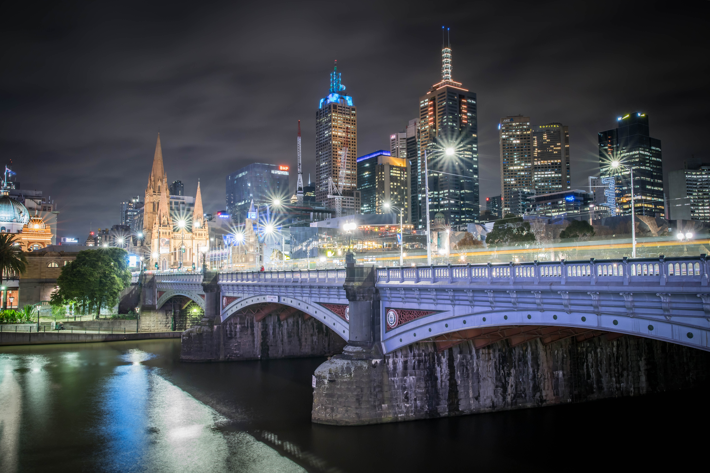

About
Hello!
My name is Simon Van Der Peet. I began my photography journey in 2017 when I saw that I had a proper DSLR
sitting around that was doing absolutely nothing.
I decided to pick it up and start playing with it. Began looking at tutorials online, reading forums, comments, etc.
I learnt slow, so I began studying on my own. Wrote my own tutorial on certain techniques, based on how I perceived it.
Over time I just started understanding more, seeing how certain settings work in certain situations then began
experimenting on my own.
Experimenting by making my own scenarios. Using items as products, visualising on what I'd like to achieve, the angles, the overall picture.
Eventually I just started piecing things together.
The Gear I Use
BODIES:
Canon 6D Mark II - Full Frame DSLR LENSES:
Canon 70-200mm f/2.8
Canon 24-70mm f/2.8
Canon 80mm f/1.8
Canon 100mm Macro f/2.8
Sigma 24-35mm f/2.0
LIGHTING EQUIPMENT:
Canon 430 EXIII-RT Speedlite
Godox AD400 PRO Strobe Light
Godox XPROC TTL Trigger
Phottix Light Stand 280cm
Softbox Quickfold RAJA 105cm, Baffle Diff Grid BowenS Mount Phottix
OTHER ACCESSORIES:
F-Stop Tilopa Expedition Backpack - Black
F-Stop ICU Pro - X Large
Hanel Captur Transmitter & Receiver
Canon Remote Shutter Button
Black Rapid Sling